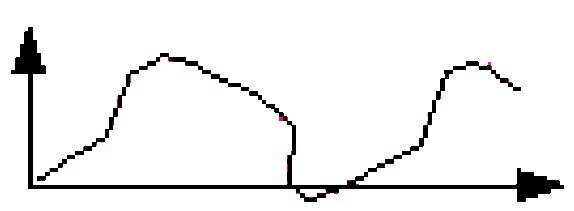
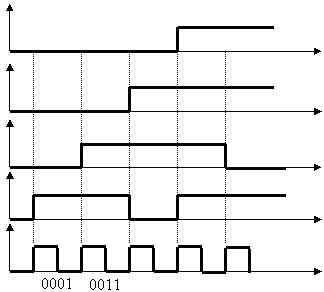
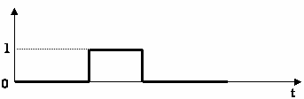

|
PRESENTATION |
Dans de nombreux domaines (industrie, recherche scientifique, services, loisirs...), on a besoin de contrôler des paramètres physiques (température, force, position, vitesse, luminosité...).
Le capteur est l'élément indispensable à la détection de ces grandeurs physiques.
Un capteur est un organe de prélèvement d'informations qui élabore à partir d'une grandeur physique, une autre grandeur physique de nature différente (souvent électrique).
Cette grandeur représentative de la grandeur prélevée est utilisable à des fins de mesure ou de commande.

On peut classer les capteurs en 3 groupes en fonction de la nature de l'information délivrée en sortie :
|
Dans la pratique industrielle, on donne à ce type de matériel le nom de capteurs. Type de signal de sortie : 0 – 10V ou 4 – 20mA |
 |
|
Souvent nommés codeurs ou compteurs. Type de signal de sortie : 0011 ou 0001 |
 |
Les capteurs logiques ou Tout Ou Rien (TOR) Ils portent le nom de détecteurs. Type de signal de sortie 0V ou 5V |
 |
Créé avec HelpNDoc Personal Edition: Générateur de documentation et EPub gratuit